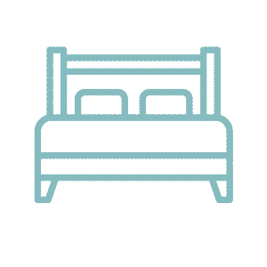
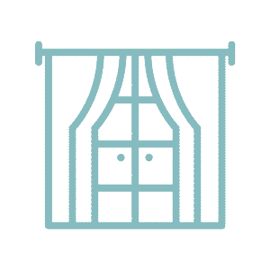

×

Bedding
Throws and pillows serve to comfort and ease distress. Consider white/yellow tones to brighten a room and improve mood, or pale green/blue to calm. Coordinate the color palette of bedding with decor, so as not to stress the user.
×

Windows
Windows are especially important in the bedroom, as a lack of natural light can disrupt one's sleep-wake cycle and cause delirium or cognitive confusion. Windowless rooms may also induce claustrophobia.
×
Rugs
Rugs provide texture, and a richly-textured rug (i.e. shag) may enhance a room's sense of comfort and happiness. Similar to artwork/decor and bedding, be conscious of the effect that color may have on the space's user.